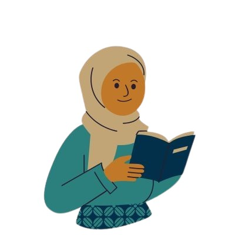
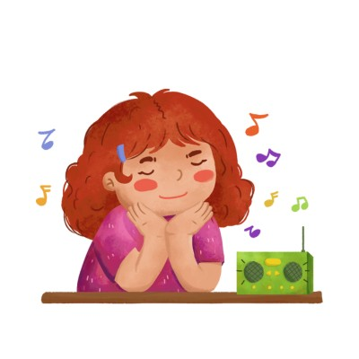
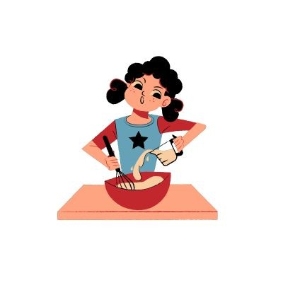

In their spare time, everyone has a hobby or pastime they love; it doesn't have to be something large, but it should be enough to inspire, calm, or simply make them happy. Hobbies are a significant aspect of life, in my opinion.They not only help me better understand who I am, but they also provide a place where I can escape the stress of daily life, find inspiration, and occasionally pick up new skills.
I think that my interests are a reflection of who I am as a person and how I view the world, not just a simple pastime. There are days when I lose myself in a book, and other times when music is the best thing I can do to help me relax. I also occasionally step outside of my comfort zone because of my hobbies, whether it's trying something new, going somewhere I've never been, or just taking little but meaningful pictures.
Some of my interest are :

- Reading
- - I enjoy reading novels and inspirational books. It helps me improve my vocabulary, relax my mind, and expand my creativity.

- Listening to music
- - Music is my escape. I love listening to calm or lo-fi music while studying or relaxing. It helps me stay focused and inspired.

- Baking
- - Baking is both creative and relaxing for me. I enjoy trying out new recipes and sharing my bakes with friends and family.